Ishioka, Ibaraki: things to do, food and stays
Ishioka · Ibaraki
Ishioka
Highlighted on the Ibaraki map.

Stay
ホテルルートイン石岡
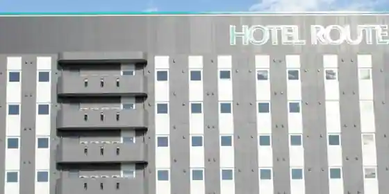
Hotel Route Inn Ishioka
Hotel in Ishioka; 10-minute walk from Jrjobansenishioka Station.
ビジネス旅館吉川
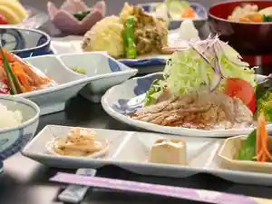
Business Ryokan Yoshikawa
Ryokan inn in Fuchu, Ishioka with Wi-Fi and business travelers; 1-minute walk from Jrishioka Station.
HOTEL Dane＆Kerry Dog Resort
HOTEL Dane&Kerry Dog Resort
Inn in Ishioka with business travelers; 4-minute walk from Ishioka Station.
ＨＯＴＥＬ ＳＯＳＨＡ
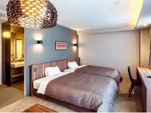
HOTEL SOSHA
ホテル橋本楼
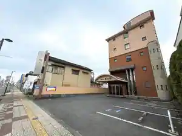
Hotel Hashimoto Ro
Hotel in Fuchu, Ishioka with business travelers; 10-minute walk from Ishioka Station.
ＨＯＴＥＬ Ｒ９ Ｔｈｅ Ｙａｒｄ 石岡
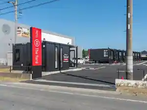
HOTEL R9 The Yard Ishioka
霞ヶ浦 地場食材に舌鼓 割烹旅館いづみ荘
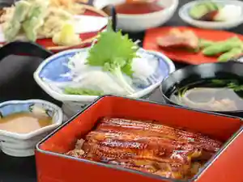
Kasumi Ke Ura Jiba Shokuzai Ni Shitazutsumi Kappo Ryokan Izumi So
Ryokan inn in Takahama, Ishioka with lakeside location.
花やさと山
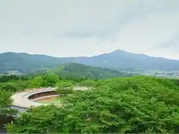
Hanaya Sato Yama
Dining
猪口才
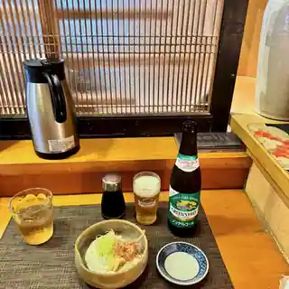
Chokozai
極み焼肉ホルモン 清司
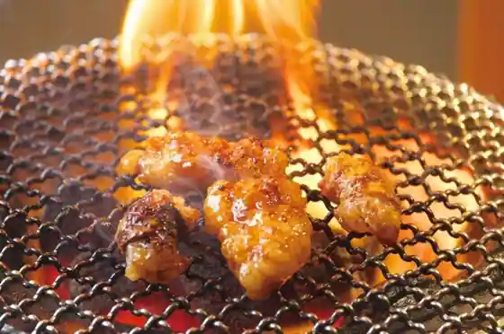
Kiwami Yakiniku Horumon Kiyoshi
蕎麦蔵めぐみ
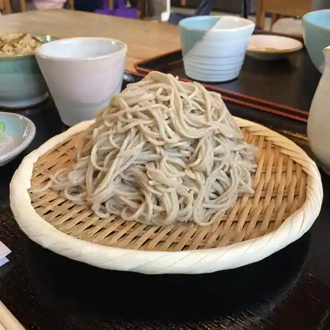
Soba Kura Megumi
燦虎
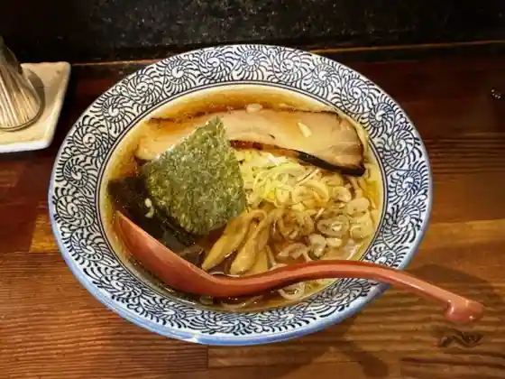
San Tora
東筑波カントリークラブ レストラン
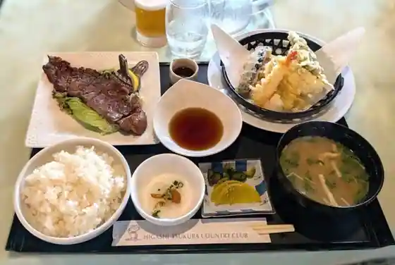
Tochiku Nami Kantorikurabu Restaurant
あかし庵
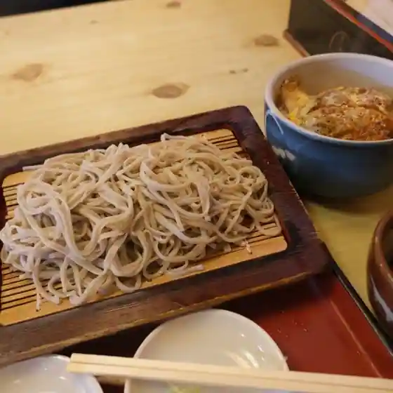
Akashi Iori
キッチン さくら
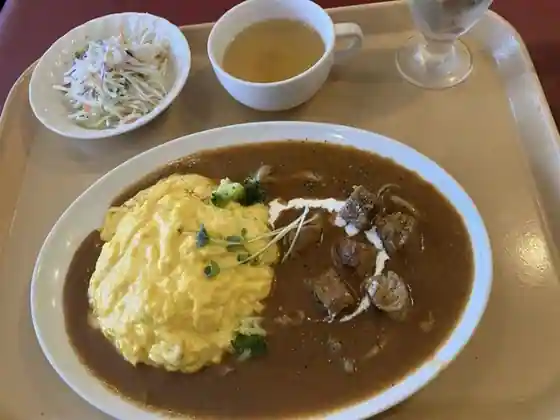
Kitchen Sakura
中華蕎麦 三藤 石岡店
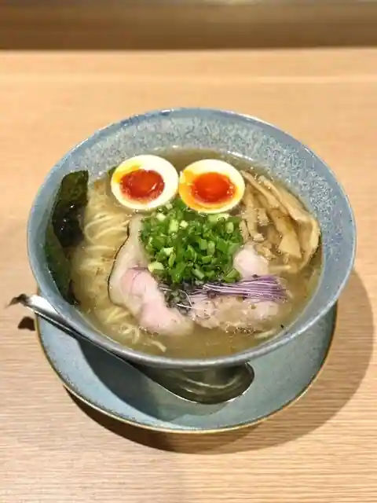
Chuka Soba Mito Ishioka
むつみ食堂
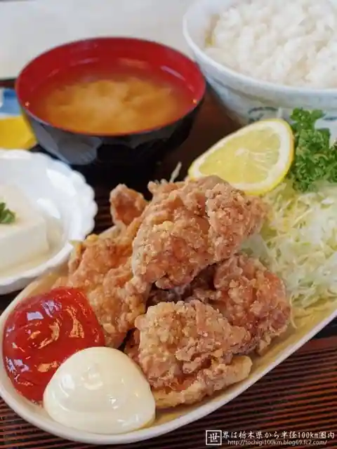
Mutsumi Shokudo
サミットゴルフクラブレストラン
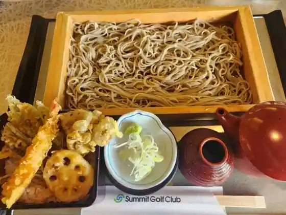
Samittogorufukurabu Restaurant
手打ちそば処 麓
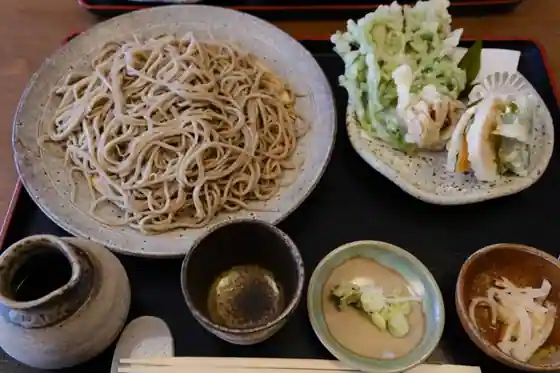
Teuchi Chisoba Tokoro Fumoto
そば処 手打 心芯
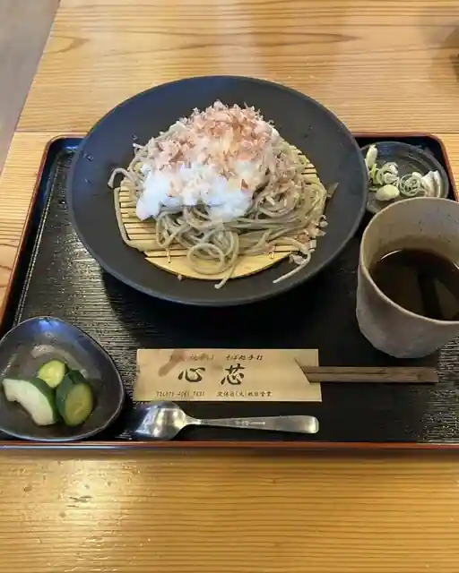
Soba Tokoro Teuchi Kokoro Shin
とんかつ関平
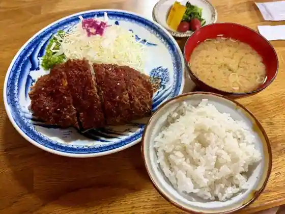
Tonkatsu Kanpei
かまたや
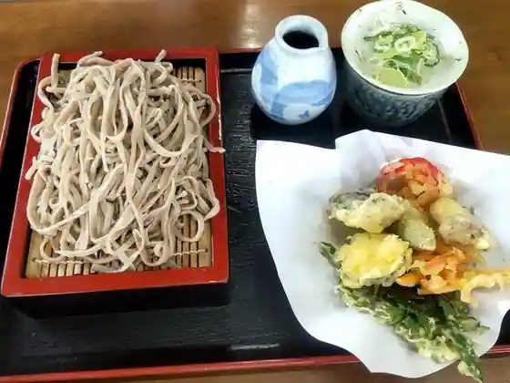
Kamataya
パン工房 ぶれっど
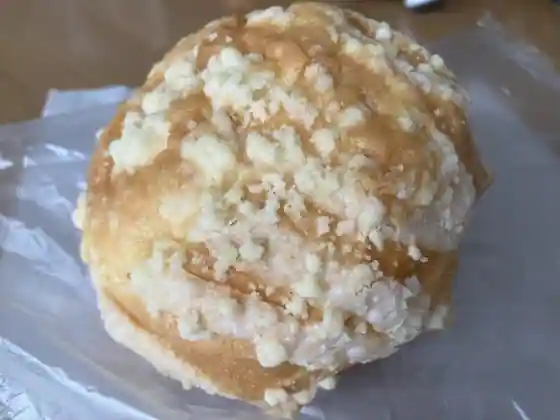
Bakery Kobo Bureddo
森樹
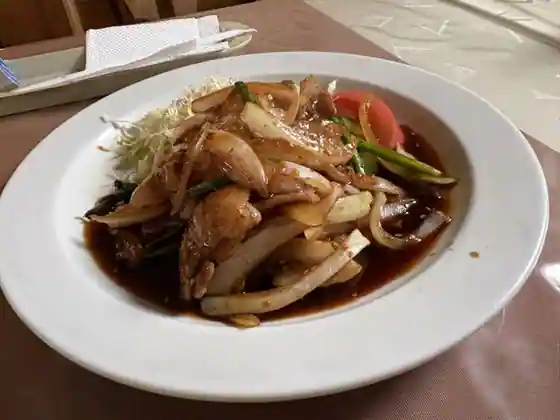
Mori Ki
そば処 楓
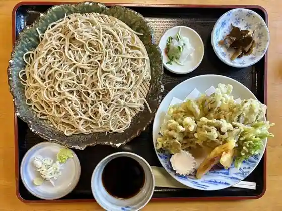
Soba Tokoro Momiji
ブナケンカフェ
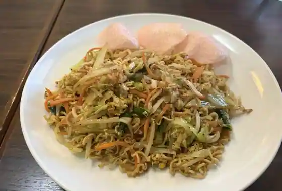
Bunaken Cafe
紫峰
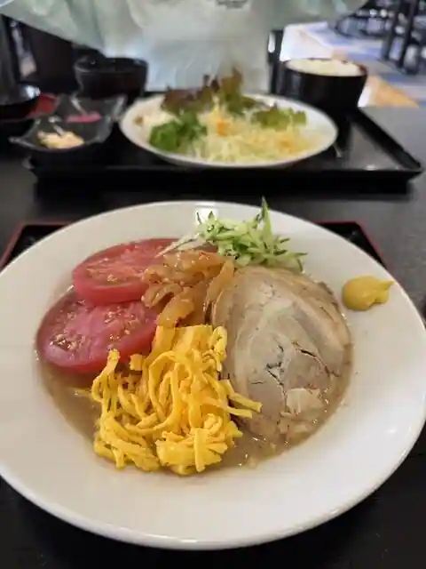
Shiho
蔵+かつ 八郷店
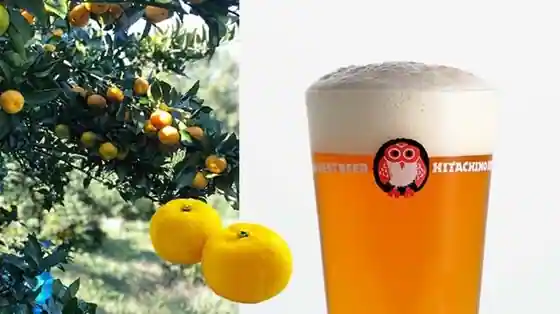
Kura + Katsu Yasato
八郷蒸溜所 ビジターセンター
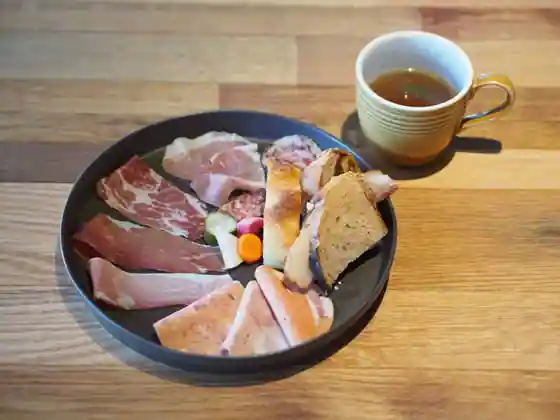
Yasato Joryu Tokoro Bijita Center
ヨット食堂 駅前本店
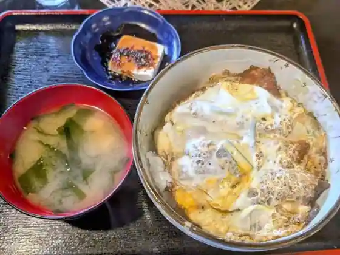
Yotto Shokudo Ekimae Hon
日本蕎麦 一成 石岡店
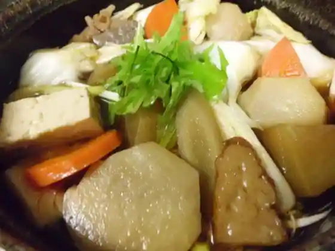
Nippon Soba Kazunari Ishioka
丸三そば
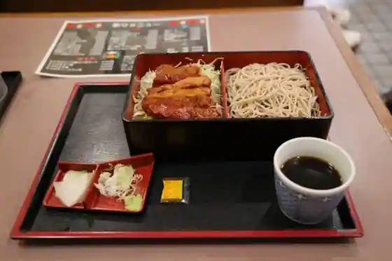
Marusan Soba
Sights
Ibaraki Furawa Park

Dacho Okoku Ishioka Farm

Imahashi Kanko Orchard

Yasato Onsen Yuri no Sato
Suzuki Kanko Orchard

Gita Bunka Kan
Okamoto Orchard
Okano Farm
Hitachi Fudoki no Oka
Uchida Kanko Orchard
Yasato Kanko Kaju Kumiai
Sakai Kanko Orchard
Tochiku Nami Yutopia
Ishioka Tsukubane Oto Campground
Ea Park Coo
Sanpo Sono
Torattoria Aguresute (trattoria Agreste)
Inaka no Aji Horoku Ya
Takano Kanko Budo Sono
Furutsu Park
Honda Orchard
Machi Kura Ai
Middokuriikufisshingueria
Yasato de toreta Magatto
JA Yasato Kakioka Chokubai Tokoro
JA Yasato (Sato no Shiki) Sonobe Chokubai Tokoro
Honda Kaki Sono
Ichigo Ie no Mu no Mu
Igosaki Ichigo Sono
Ishioka Fureai no Sato Himawari no Kan Aji Aji Tei
Honda Engei
JA Yasato Yasato Onsen Yuri no Sato Bussan Kan
Naka Village Ichigo Sono
Tarobe Orchard
Ozeki Ichigo Sono (Ishioka)
Maie Kaki Sono
Tsuji Ichigo Sono
Asahi Satoyama Gakko
Soba Tokoro Ono Etsu
Kashiwabara Ike Park
Hitachi Kokubunji Ato
Maru Saka Ichigo Sono (Kayabuki Minka)
Iida Ya (Tsukudani)
Jikasei Kona Teuchi Chi Chokozai
Daikaku Tera
Tsukuba Sono
Tanaka Orchard (Ishioka)
Koma Village Seimei Do (Senko Koma Village Michihiro)
Ramen Gyoza Teishoku no Mise
Marumi Shokudo
Kappo Asahi Gatsu En
Harada Ichigo Sono (Ishioka)
Kisetsu Ryori
Nippon Soba Kazunari Ishioka Mise
Ibaraki Nyugyo
Fuchu Yo
Maruyo Ichigo Sono
Terada Orchard
Teuchi Soba Shoan
Chugokuryori (Aji Hana)
Kappo Hisashi Shi Cho